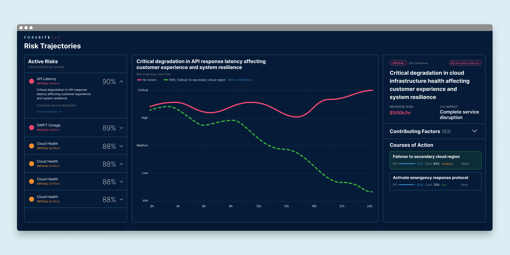
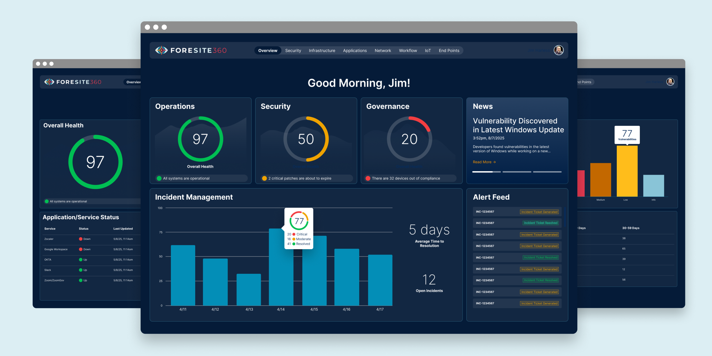
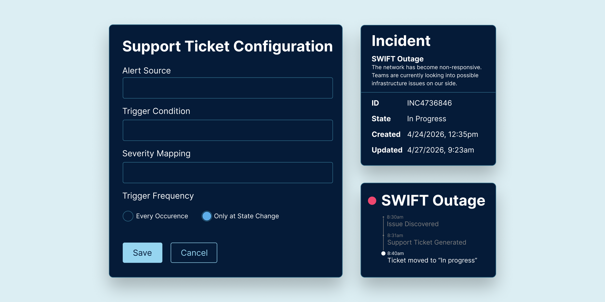

ForeSite360
Empowering teams to anticipate risks, prevent issues, and act with confidence before problems arise.
Key Contributions
- Lead Designer
- Product Owner
- HTML/CSS for the Design System
Results
45%
faster incident resolution
30%
fewer support tickets initiated by users
Courses of Action
We were able to create a full system wide dependency map that allowed us not only to perform root cause analysis, but suggested courses of action that could fix the issue with projected effects so the user could make informed decisions.

Custom Dashboards
I interviewed users in each of our user roles,then worked with each to create role-specific dashboards that helped surface only the metrics in that users domain, filtering out distractions, leting them focus on making critical, informed decisions.

Automated Support Tickets
Configurable alerts that can submit help desk tickets the moment an issue is detected so the problem can start to be fixed before the user is even aware of it.

Conclusion
I designed an intuitive experience that provided immediate insight into the most critical risks for the business’s key domains, also providing suggested courses of action with projected effects.